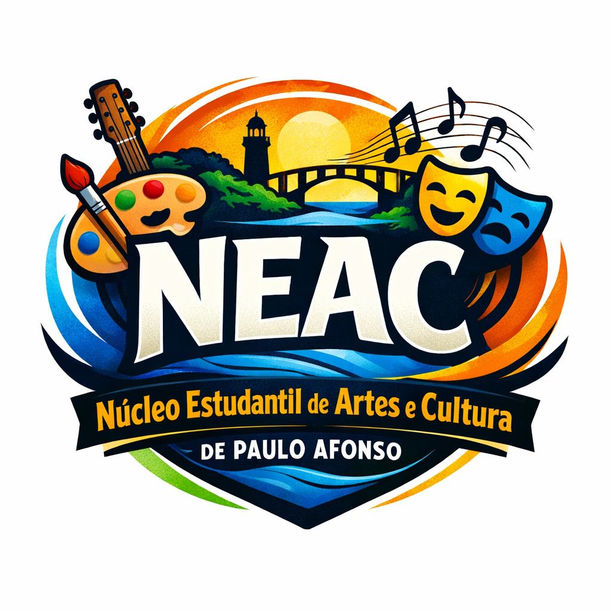

Espaço de formação artística e cultural para estudantes de Paulo Afonso.
O Núcleo Estudantil de Artes e Cultura de Paulo Afonso (NEAC) é uma iniciativa voltada para o incentivo à produção cultural e artística entre os estudantes. O núcleo promove oficinas, atividades formativas e eventos nas áreas de música, teatro, artes visuais, dança e outras expressões culturais.
| Dia | Oficina | Horário | Local | Oficineiro |
|---|---|---|---|---|
| Segunda | 🎵 Música | 14h às 16h | Sala de Cultura | João Silva |
| Terça | 🎭 Teatro | 15h às 17h | Auditório Escolar | Maria Souza |
| Quarta | 🎨 Artes Visuais | 14h às 16h | Sala de Artes | Carlos Lima |
| Quinta | 💃 Dança | 15h às 17h | Quadra Escolar | Ana Santos |
| Sexta | 🥁 Cultura Popular | 14h às 16h | Espaço Cultural | Pedro Oliveira |